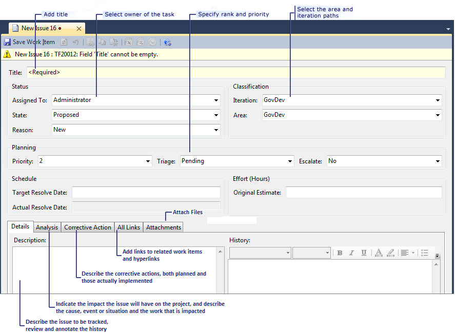

You can use the issue work item in GovDev for TFS 2010 V1.0 to help you track problems with the project plan and its activities and tasks. Issues are not to be confused with bugs. The bug work item type is provided to track problems with the code and specific failing tests. The issue work item type is provided to help you track all other problems with the project. Some examples are ambiguity in the requirements, unavailability of personnel or other resources, problems with environments, other project risks that are occurring, and, in general, anything that puts successful delivery of the project at risk.
What makes issues different is that they represent unplanned activities. Resolving issues is not normal project work. Therefore, it must be tracked and given special attention. Tracking these project problems with issue work items and using the reporting and queries in Team Foundation Server helps to develop a core capability to manage and resolve issues quickly and effectively.
In this topic
 Create an Issue Work Item
Create an Issue Work Item
When an issue occurs, create an issue work item, describe the problem, and describe suggested resolutions, if any are known. The work item form for an issue stores data in the fields and tabs that appear in the following illustration :

Review
the Issues
The open issues on the project should be reviewed regularly.
To view the issues, run the Open Issues query that is provided with the template. Sort the issues by status using “proposed” to triage any new issues. For more information, see Issue (GovDev).
Analyze
Issues
Each new issue should be analyzed for both its symptoms and root cause. A plan of corrective action should be made to address the symptoms or (preferably) the root cause. Record the plan on the Corrective Action tab of the issue. The decision to work around the issue or try to fix the root cause should reflect the project risks. These decisions should be documented in the issue work item.
Record the action plan, and then break the work into task work items, linked to the issue work item as affected. For more information about how to link work items, see Issue (GovDev). Tasks should be assigned to individual team members for resolution.
Verify
Resolved Issues
During your regular review of open issues, it is a good idea to review issues that have been marked as resolved. If a consensus accepts the documented resolution, mark the issue as “closed,” and set its reason to “resolved.” Use the open issues query, and filter for state equals “resolved.”
Review
Issues for Resolution
After all tasks under an issue have been completed, the stakeholders should decide whether the issue has been resolved.
Open the issue work item and any blocked work items. You can refer to the Corrective Actions tab to view the original plan for action and what action was taken. You can also see the task work items that are associated with the issue by displaying the All Links tab for the Affected links. Has the corrective action successfully unblocked the work items and resolved the issue? If not, rework the corrective actions, and reassign them to team members. Was the corrective action performed promptly? Was an unexpected external (or special cause) event and impact on the schedule critical path avoided? Are the project commitments safe, or must they be renegotiated? Record all this detail in the work item.
If the stakeholders are satisfied that the issue has been resolved successfully, mark the issue as “resolved.” It can then be formally closed.
If the issue has not been successfully resolved, rework the corrective action tasks, and assign them to suitable personnel for resolution. Reconsider the priority of the issue, and consider raising it to expedite resolution and to avoid additional delay.